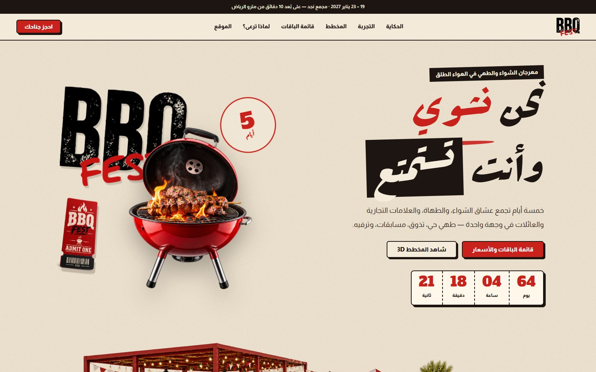
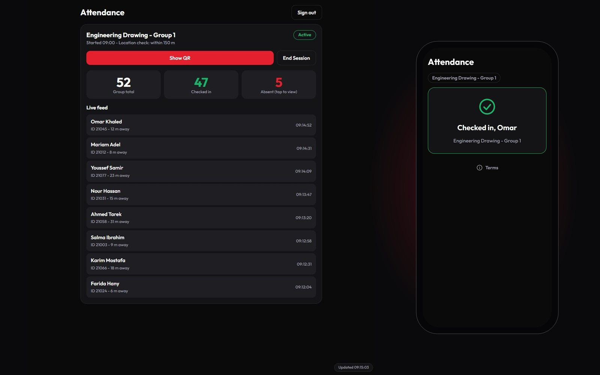
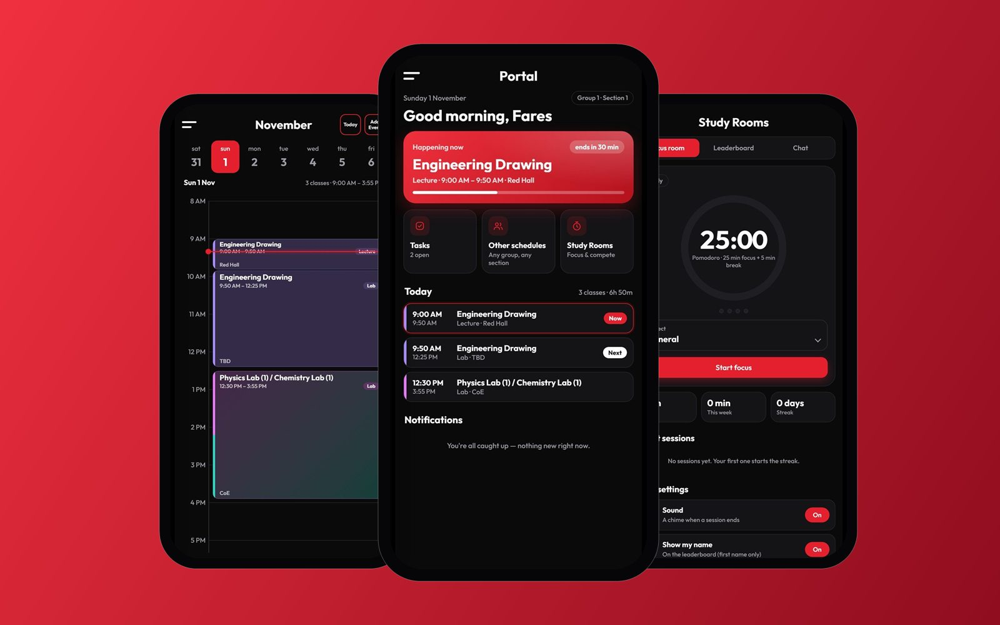
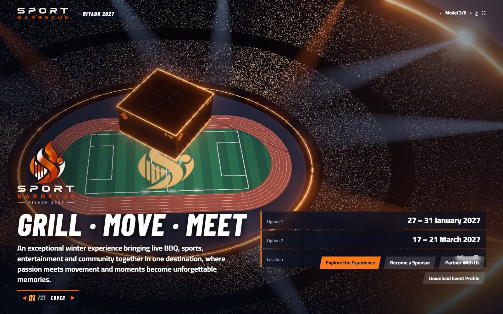
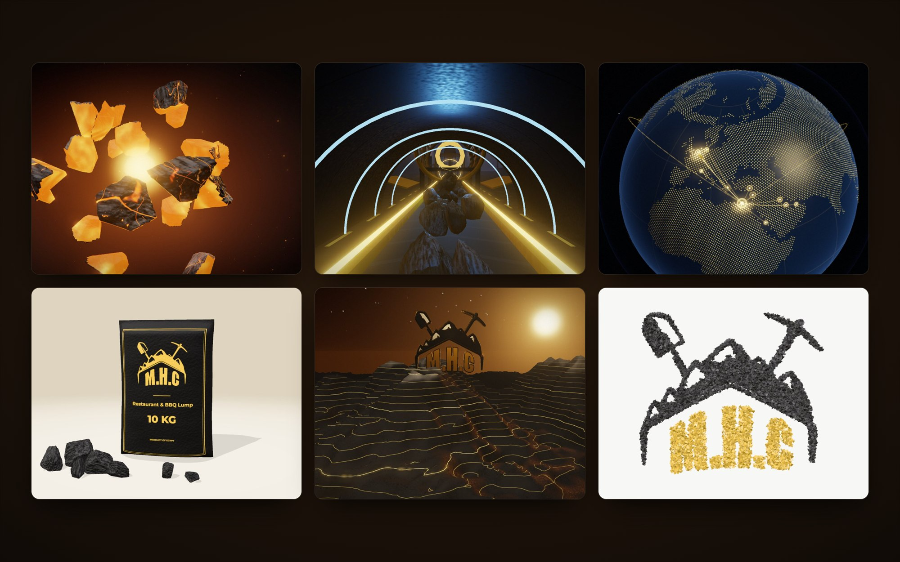
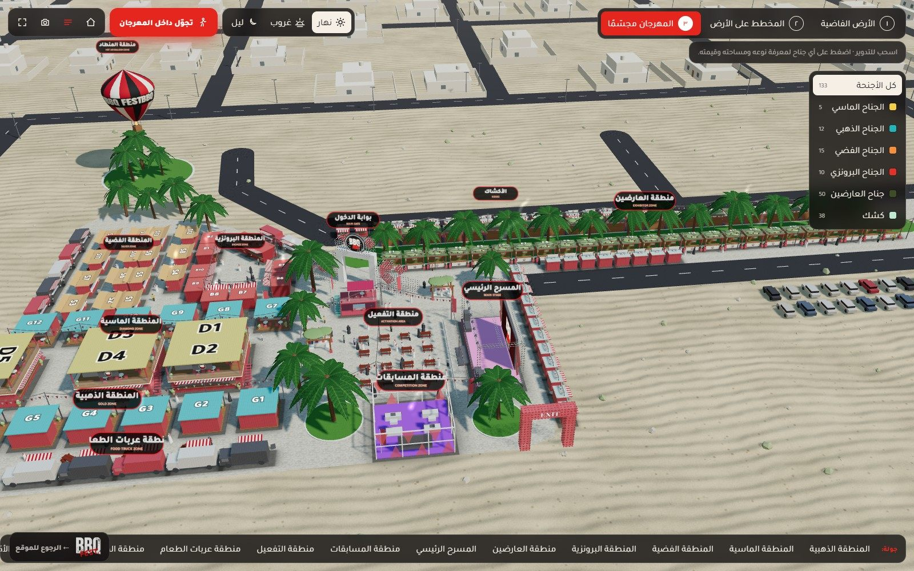

Fares Elzouhiry — Front-end developerفارس الزهيري — مطوّر واجهات أمامية
Websites from another dimension.مواقع من بُعدٍ آخر.
Websites, apps, presentations, 3D modeling and games — in English and Arabic, designed and coded by hand.مواقع وتطبيقات وعروض تقديمية ونمذجة ثلاثية الأبعاد وألعاب — بالعربية والإنجليزية، مصممة ومبرمجة يدويًا.
4D tesseractمكعّب رباعي الأبعاد· drag to rotate· اسحب لتديره· swipe sideways to spin· اسحب يمينًا ويسارًا لتديره
Websitesمواقع1/2 Company website · Riyadhموقع شركة · الرياض
Alliance Investmentتحالف للاستثمار
A six-language site that opens on a live 3D globe of a 16-country network.موقع بست لغات يبدأ بكرة أرضية حيّة لشبكة من 16 دولة.
6 designs for the CEO6 تصميمات للرئيس التنفيذي · Gateway wonفاز Gateway

Websitesمواقع2/2 Festival website · Riyadhموقع مهرجان · الرياض
BBQ FestBBQ Fest
The website for a five-day BBQ festival in Riyadh: warm paper, stamps and a price list shaped like a menu — with a 3D map of the whole festival.موقع مهرجان شواء لمدة خمسة أيام في الرياض: ورق دافئ وأختام وقائمة أسعار على شكل منيو — مع مخطط ثلاثي الأبعاد للمهرجان كله.
3 designs for the client3 تصميمات للعميل · the light one wonفاز التصميم الفاتح

Appsتطبيقات1/2 Live attendance · Justerحضور مباشر · Juster
Doctor Dashboardلوحة الدكتور
Students scan the doctor's QR code and appear in the list instantly — only from inside the hall.يمسح الطلاب رمز QR الخاص بالدكتور فيظهرون في القائمة فورًا — من داخل القاعة فقط.
Pagesالصفحات · sample dataبيانات تجريبية

Appsتطبيقات2/2 Student app · Justerتطبيق للطلاب · Juster
University Appتطبيق الجامعة
The university in a student's pocket: live schedule, tasks and focus rooms. Works offline.الجامعة في جيب الطالب: الجدول لحظة بلحظة، والمهام، وغرف المذاكرة. يعمل دون إنترنت.

Presentationsعروض تقديمية1/1 Sponsor deck · Riyadh 2027عرض للرعاة · الرياض 2027
Sport BarbecueSport Barbecue
A 27-slide sponsor deck set in a 3D night stadium: the camera flies like a drone, and a screen above the pitch shows each slide.عرض للرعاة من 27 شريحة داخل استاد ليلي ثلاثي الأبعاد: الكاميرا تطير كطائرة درون، وشاشة فوق الملعب تعرض كل شريحة.

3D Modelingنمذجة ثلاثية الأبعاد1/2 Coal maker · Egyptمصنع فحم · مصر
MHC CoallineMHC Coalline
Six 3D worlds for a charcoal maker, all modeled in code and running live in the browser: glowing coal, a factory line, a bag the client designs, a mountain from the logo.ستة عوالم ثلاثية الأبعاد لمصنع فحم، كلها منمذجة بالكود وتعمل مباشرة في المتصفح: فحم متوهج، وخط مصنع، وكيس يصممه العميل، وجبل من الشعار.
3D scenesالمشاهد

3D Modelingنمذجة ثلاثية الأبعاد2/2 Event site · Riyadhموقع فعالية · الرياض
BBQ Fest in 3DBBQ Fest مجسّمًا
The whole festival modeled in 3D: 133 booths, the stage, food trucks, palms and a balloon. From empty land to the full festival, by day, sunset or night — and you can walk inside it.المهرجان كله منمذج بثلاثة أبعاد: 133 جناحًا والمسرح وعربات الطعام والنخيل والمنطاد. من الأرض الفاضية إلى المهرجان كاملًا، نهارًا أو غروبًا أو ليلًا — ويمكنك التجول بداخله.
From land to festivalمن الأرض إلى المهرجان

Gamesألعاب1/1 1 or 2 playersلاعب أو لاعبان
Pizza SpinPizza Spin
A cooking duel: knead, top and bake a pizza faster than your rival. Play it right here with the keyboard, or with two controllers for two players.مبارزة طبخ: اعجن وزيّن واخبز البيتزا أسرع من منافسك. العبها هنا بلوحة المفاتيح، أو بيدَي تحكم للاعبَين.

Contactتواصل